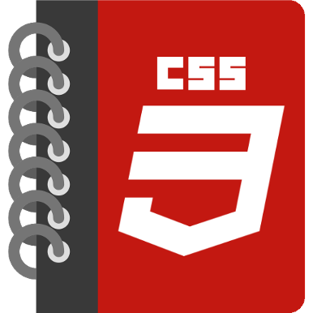
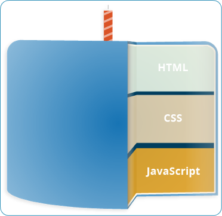
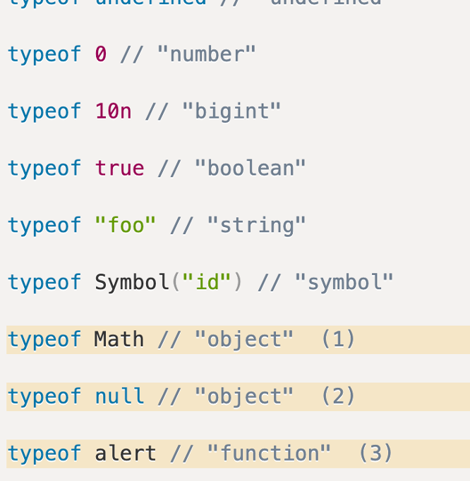
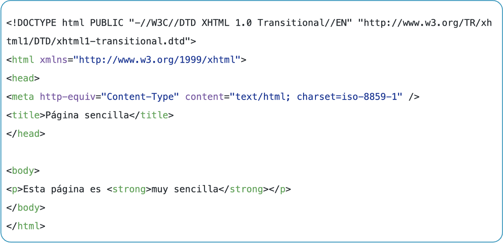
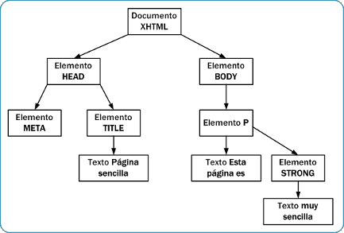
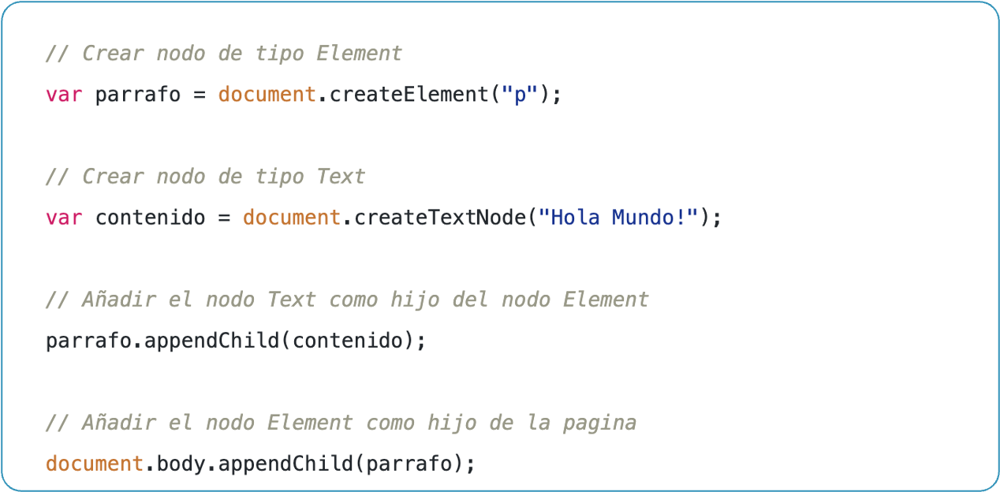
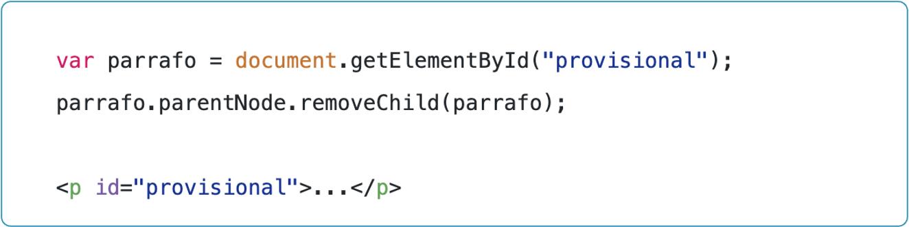

Lo que ya conocemos
HTML define la estructura y CSS el diseño visual de una página web.
Lenguaje de marcado para dar significado al contenido web.

Lenguaje de reglas de estilo aplicado al contenido HTML.

Estructura de una Página Web
Cuando visitas un sitio web, tu navegador (cliente) le solicita información a un servidor.
El servidor la procesa y te responde.
| Frontend | Backend |
|---|---|
| Navegador del usuario | Servidor remoto |
| HTML / CSS / JS en el browser | Node.js / Python / Go / Java… |
| Lo que el usuario ve | Lo que el usuario NO ve |
[Navegador] ──── HTTP Request ──── [Servidor]
│
Lógica + DB
│
[Navegador] ─── HTTP Response ─── [Servidor]
El backend procesa, el frontend presenta.
Un lenguaje, dos mundos
| Frontend (Navegador) | Backend (Servidor) |
|---|---|
| Manipula el DOM | Responde solicitudes HTTP |
| Maneja eventos del usuario | Accede a bases de datos |
| Corre en el browser | Corre en Node.js |
Un mismo lenguaje que puedes usar en ambos lados del stack.
Que necesitas para escribir código backend
let y const por su alcance
de bloque.
let nombre = "Juan";
const PUERTO = 3000;
var edad = 25; // evitar — alcance de función
const no puede reasignarse.
let sí puede cambiar.
JavaScript tiene 7 tipos de datos primitivos.
Para encontrar el tipo usamos typeof.

Ejecutan código según una condición.
let statusCode = 404;
if (statusCode === 200) {
console.log("OK");
} else if (statusCode === 404) {
console.log("Not Found");
} else {
console.log("Error del servidor");
}
// linea y /* bloque */.let / const.Descargar desde: nodejs.org
node -v # versión de Node.js
npm -v # versión del gestor de paquetes
servidor.js
// Módulo nativo de Node.js para crear servidores HTTP
const http = require('http');
const servidor = http.createServer((req, res) => {
res.writeHead(200, { 'Content-Type': 'text/plain' });
res.end('¡Hola desde el servidor!');
});
servidor.listen(3000, () => {
console.log('Servidor corriendo en http://localhost:3000');
});
node servidor.js
Abre tu navegador en http://localhost:3000
El servidor recibe la petición del browser y responde texto. Esto es el ciclo cliente-servidor en acción.
npm init -y — crea package.json.
npm init -y
npm install express
Framework que hace más sencillo crear APIs y servidores.
const express = require('express');
const app = express();
app.get('/', (req, res) => {
res.json({ mensaje: '¡Hola desde el backend!' });
});
app.listen(3000, () => {
console.log('API corriendo en el puerto 3000');
});
const usuarios = [
{ id: 1, nombre: 'Ana' },
{ id: 2, nombre: 'Luis' }
];
// GET /usuarios → devuelve la lista
app.get('/usuarios', (req, res) => {
res.json(usuarios);
});
// GET /usuarios/:id → devuelve uno
app.get('/usuarios/:id', (req, res) => {
const usuario = usuarios.find(u => u.id == req.params.id);
res.json(usuario || { error: 'No encontrado' });
});
// GET http://localhost:3000/usuarios
// Respuesta del servidor:
[
{ "id": 1, "nombre": "Ana" },
{ "id": 2, "nombre": "Luis" }
]
JSON (JavaScript Object Notation) es el formato estándar para transferir datos entre backend y frontend.
El concepto es el mismo en cualquier lenguaje. Cambia la sintaxis, no la idea.
http.server incluido, sin instalar nada.
# servidor.py
from http.server import HTTPServer, BaseHTTPRequestHandler
class MiServidor(BaseHTTPRequestHandler):
def do_GET(self):
self.send_response(200)
self.end_headers()
self.wfile.write(b"Hola desde Python")
servidor = HTTPServer(("localhost", 8000), MiServidor)
print("Corriendo en http://localhost:8000")
servidor.serve_forever()
python3 servidor.py
from http.server import HTTPServer, BaseHTTPRequestHandler
class MiServidor(BaseHTTPRequestHandler):
def do_GET(self):
self.send_response(200)
self.send_header("Content-Type", "text/html")
self.end_headers()
html = """
<html>
<body>
<h1>Bienvenido</h1>
<p>Página generada por el servidor Python</p>
</body>
</html>
"""
self.wfile.write(html.encode())
HTTPServer(("localhost", 8000), MiServidor).serve_forever()
import json
from http.server import HTTPServer, BaseHTTPRequestHandler
class MiServidor(BaseHTTPRequestHandler):
def do_GET(self):
self.send_response(200)
self.send_header("Content-Type", "application/json")
self.end_headers()
datos = {"id": 1, "nombre": "Ana", "activo": True}
self.wfile.write(json.dumps(datos).encode())
HTTPServer(("localhost", 8000), MiServidor).serve_forever()
| Content-Type: text/html | Content-Type: application/json |
|---|---|
| El browser lo renderiza visualmente | El browser o JS lo procesa como datos |
<h1>Bienvenido</h1>
|
{"id":1,"nombre":"Ana"}
|
| Para páginas web tradicionales | Para APIs consumidas por el frontend |
El backend decide qué hacer según el método recibido.
| Método | Acción | Equivale a |
|---|---|---|
GET | Leer | Consultar |
POST | Crear | Agregar |
PUT | Actualizar | Modificar |
DELETE | Eliminar | Borrar |
pip install flask
# app.py
from flask import Flask, jsonify, request
app = Flask(__name__)
# Lista en memoria (simula una base de datos)
usuarios = [
{"id": 1, "nombre": "Ana"},
{"id": 2, "nombre": "Luis"}
]
if __name__ == "__main__":
app.run(port=8000, debug=True)
El cliente pide información. El servidor la devuelve.
# GET /usuarios → devuelve todos
@app.route("/usuarios", methods=["GET"])
def obtener_todos():
return jsonify(usuarios)
# GET /usuarios/1 → devuelve uno
@app.route("/usuarios/<int:id>", methods=["GET"])
def obtener_uno(id):
usuario = next((u for u in usuarios if u["id"] == id), None)
if usuario:
return jsonify(usuario)
return jsonify({"error": "No encontrado"}), 404
# Respuesta: GET /usuarios
[{"id": 1, "nombre": "Ana"}, {"id": 2, "nombre": "Luis"}]
El cliente envía datos nuevos. El servidor los guarda.
@app.route("/usuarios", methods=["POST"])
def crear():
nuevo = request.json # datos que envió el cliente
usuarios.append(nuevo)
return jsonify(nuevo), 201 # 201 Created
# El cliente envía (body JSON):
{"id": 3, "nombre": "Carlos"}
# El servidor responde:
{"id": 3, "nombre": "Carlos"} ← con status 201
El cliente envía los datos nuevos de un recurso existente.
@app.route("/usuarios/<int:id>", methods=["PUT"])
def actualizar(id):
for u in usuarios:
if u["id"] == id:
u.update(request.json)
return jsonify(u)
return jsonify({"error": "No encontrado"}), 404
# PUT /usuarios/1 con body:
{"nombre": "Ana González"}
# Respuesta:
{"id": 1, "nombre": "Ana González"}
El cliente indica qué recurso borrar. El servidor lo elimina.
@app.route("/usuarios/<int:id>", methods=["DELETE"])
def eliminar(id):
global usuarios
antes = len(usuarios)
usuarios = [u for u in usuarios if u["id"] != id]
if len(usuarios) < antes:
return jsonify({"mensaje": "Usuario eliminado"})
return jsonify({"error": "No encontrado"}), 404
# DELETE /usuarios/2
# Respuesta:
{"mensaje": "Usuario eliminado"}
| CRUD | HTTP | Ruta | Status típico |
|---|---|---|---|
| Create | POST |
/usuarios |
201 |
| Read | GET |
/usuarios |
200 |
| Update | PUT |
/usuarios/1 |
200 |
| Delete | DELETE |
/usuarios/1 |
200 |
El frontend lo consume.
// JavaScript en el navegador — fetch al backend Python
fetch("http://localhost:8000/usuarios")
.then(res => res.json())
.then(datos => console.log(datos));
// Resultado en consola:
// [{"id": 1, "nombre": "Ana"}, {"id": 2, "nombre": "Luis"}]
Ahora veamos cómo JS en el navegador puede leer y presentar esos datos en pantalla.
Ahora veamos JS en el navegador


document.getElementById("titulo").textContent =
"¡Hola, JavaScript!";
document.querySelector("button")
.addEventListener("click", function() {
alert("¡Botón clickeado!");
});
Dos formas de llegar a un nodo:
getElementsByTagName
Obtiene todos los elementos con una etiqueta dada.
let parrafos = document.getElementsByTagName("p");
let primer_parrafo = parrafos[0];
getElementById
Obtiene el elemento con un id específico.
let titulo = document.getElementById("titulo");
console.log(titulo);
getElementsByClassName
Obtiene todos los elementos con una clase dada.
let elementos = document.getElementsByClassName("parrafo");
console.log(elementos);
querySelector / querySelectorAll
Selecciona usando sintaxis CSS.
let parrafo = document.querySelector("p"); // primero
let parrafos = document.querySelectorAll("p"); // todos


textContent — texto plano.innerHTML — HTML interno.style — estilos inline.setAttribute — atributos HTML.
// Texto
document.getElementById("titulo").textContent = "¡Hola!";
// HTML interno
document.getElementById("titulo").innerHTML =
"¡Hola!";
// Estilo
document.getElementById("titulo").style.color = "red";